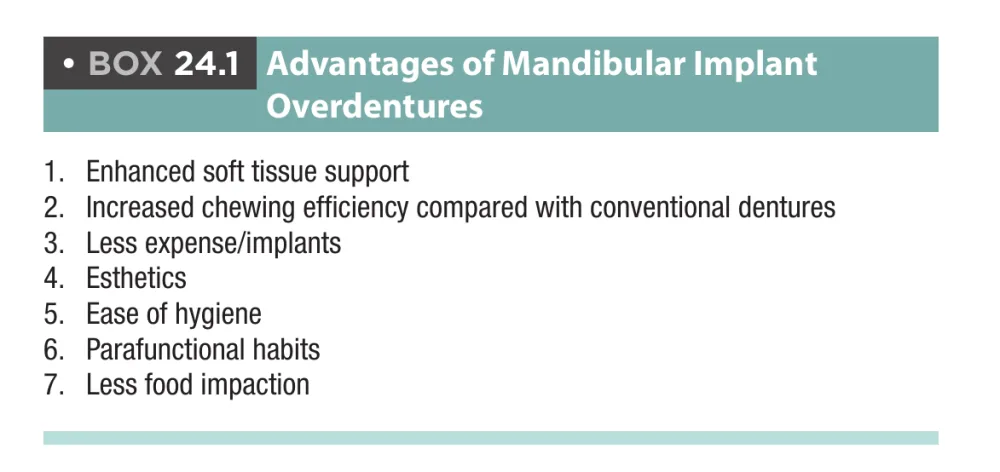

نسخه استخراجشده؛ ترجمه یا تأیید علمی انجام نشده است. وضعیت: captured
در دو یونیت پیش، تصمیم ثابت را در هر دو قوس ساختیم. این یونیت به سراغ نیمهی دیگر میرود — و از یک جای غیرمنتظره شروع میکند: نه از پروتز، بلکه از شکایت بیمار.
اندیکاسیونهای اصلی اوردنچر ایمپلنتی مندیبل، همان مشکلاتیاند که اغلب با دنچر پایین دیده میشوند:
و دو قاعدهی تصمیم که کل این یونیت را چارچوب میدهند:
و یک اصل که پیش از هر چیز دیگری میآید: «برای یک اوردنچر ایمپلنتساپورتد، ایمپلنتها باید در جایگاههای برنامهریزیشده و مشخص قرار گیرند، و شمارشان باید از پیش توسط پزشک و بیمار تعیین شود.»
به این جمله دقت کن — «توسط پزشک و بیمار». در سراسر این یونیت خواهی دید که انتخاب میان چهار گزینهی اوردنچر مندیبل، بهاندازهی آناتومی، به انتظار و بودجهی بیمار وابسته است. یعنی تصمیم در اینجا صریحاً مشترک است.
اوردنچر ایمپلنتی مندیبل هفت مزیت دارد. اما ارزش واقعی در توضیح هرکدام است:
۱ — ساپورت بهتر بافت نرم. «تحلیل استخوان، ظاهر یکسوم تحتانی صورت را تعیین میکند.» و اوردنچر ماگزیلا اغلب ساپورت بهتری برای لب و بافتهای نرم صورت میدهد تا پروتز ثابت، چون کانتور پروتز مجبور نیست الزامات بهداشت روزانه را جا بدهد.
۲ — کارایی جویدن بیشتر از دنچر متعارف. و اینجا دو عدد داریم:
۳ — هزینه و شمار ایمپلنت کمتر. و یک نظرسنجی جالب در ۱۰ کشور نشان داد نسبت انتخاب اوردنچر در برابر پروتز ثابت، در هلند ۹۳ درصد بالاترین و در سوئد و یونان ۱۲ درصد پایینترین بود.
و دلیلی که در همان نظرسنجی ذکر شد: «هزینه بهعنوان عامل شمارهیک تعیینکننده در انتخاب نام برده شد.» — یعنی تفاوت نزدیک به هشتبرابری میان کشورهای اروپایی، بیش از هر چیز از هزینه میآید، نه از آناتومی.
۴ — زیبایی. دلیلش فنی است: پاپیلای بیندندانی و درِیپ بافت نرم را با اوردنچر آسانتر میتوان ساخت تا با پرسلن-متال یا زیرکونیا. و مهمتر از آن: «دندانها میتوانند در زیباترین موقعیت قرار گیرند، بدون هیچ محدودیتی نسبت به رابطهشان با کرست آتروفییافته، چون پایداری اکنون توسط ایمپلنت فراهم میشود و به موقعیت دندان روی کرست ریج وابسته نیست.»
۵ — سهولت بهداشت. «پروبینگ پریایمپلنت گرداگرد یک بار آسانتر از یک پروتز ثابت است، چون تاج اغلب مانع دسترسی خطمستقیم در امتداد اباتمنت تا کرست استخوان میشود.»
۶ — عادات پارافانکشنال. سه سازوکار جداگانه: اوردنچر هنگام خواب برداشته میشود تا اثر مخرب پارافانکشن شبانه کم شود، میتواند میان سوپراستراکچر و پروتز تسکین تنش بدهد، و بافت نرم بخشی از بار اکلوزالی را تقسیم میکند. افزون بر این، پروتز معمولاً آسانتر از ترمیم ثابت تعمیر میشود.
۷ — گیر کمتر غذا در مقایسه با پروتز ثابت. فلنجهای پروتز RP-5 معمولاً امتداد مییابند تا یک مهر محیطی (peripheral seal) بسازند.
اما اینجا یک استثنای ظریف هست که ارزش دو بار خواندن دارد: در مقایسه با یک دنچر متعارف، ذرات غذا حین بلع زیر پروتز میروند. چون دنچر پایین «شناور است» و حین عملکرد حرکت میکند، غذا راحتتر زیر آن میرود و بیرون میآید — در حالی که اوردنچر ایمپلنتی، خردهغذا را کنار ایمپلنتها، بارها و اتچمنتها نگه میدارد.
پس این مزیت مطلق نیست: اوردنچر نسبت به پروتز ثابت گیر غذا را کم میکند، ولی نسبت به دنچر متعارف خروجِ غذا را سختتر میکند. همان بیثباتی که مشکل دنچر بود، یک کارکرد پنهان خودپاککنندگی داشت.
و اکنون کارنامهی عددی — چون هفت مزیت بدون داده، فقط یک فهرست است.
نخستین گزارش بزرگ: در ۱۹۸۶ یک مطالعهی چندمرکزی ۱۷۳۹ ایمپلنت در سمفیز مندیبل ۴۸۴ بیمار را گزارش کرد. ایمپلنتها بلافاصله بارگذاری و با بار و اوردنچرِ کلیپدار ترمیم شدند. موفقیت کلی ۹۴ درصد.
و مقایسهی دو قوس که در سراسر این تخصص تکرار میشود: یک مطالعهی چندمرکزی گذشتهنگر شکست ایمپلنت را ۶ تا ۷ درصد برای اوردنچر مندیبل در برابر ۱۹ تا ۳۵ درصد برای اوردنچر ماگزیلا گزارش کرد. و هایپرپلازی زیر بار در ۲۵ درصد بیماران رخ داد.
و دادهای که همین شکاف را با جزئیات بیشتری نشان میدهد: مطالعهی پنجسالهی چندمرکزی روی ۳۰ ماگزیلا (۱۱۷ ایمپلنت) و ۱۰۳ مندیبل (۳۹۳ ایمپلنت):
و توضیح این شکاف دو بخش دارد: «نرخهای شکست بالاتر در ماگزیلا مستقیماً به تراکم و کمیت ضعیف استخوان مربوط بود، با یک الگوی مشخصهی شکست خوشهای (cluster failure pattern).» — یعنی ایمپلنتها بهصورت پراکنده شکست نمیخوردند، بلکه دستهجمعی.
و اکنون گزارشهای مساعدتر:
و عددی که مستقیماً به روش همین یونیت مربوط است: گزارش شده است کمتر از ۱ درصد شکست ایمپلنت و هیچ شکست پروتزی در یک دورهی ۷ ساله با ۱۴۷ بیمار — هنگام استفاده از همان گزینههای درمانی سازمانیافته و راهنماهای پروتزی که در این یونیت میخوانی. یعنی کارنامهی خودِ این روش هم کنار بقیه است.
و دو مطالعهی رضایت بیمار، که چیز متفاوتی میسنجند:
و یک قید که کل این کارنامه را در چارچوب میگذارد: جمعبندی این مرور روشن است: «باید توجه داشت که اکثریت گزارشها مربوط به اوردنچرهایی است که تنها با دو ایمپلنت پشتیبانی میشوند.» — یعنی این اعداد درخشان، عمدتاً از سادهترین گزینهی درمانی میآیند، نه از پیچیدهترین.
